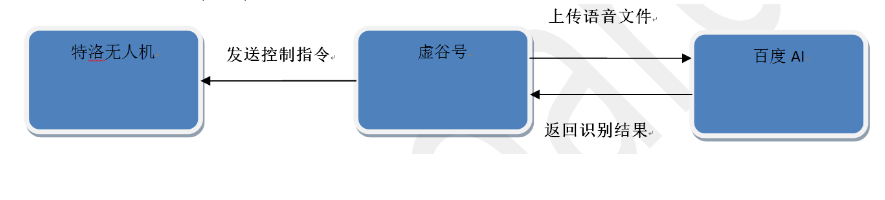
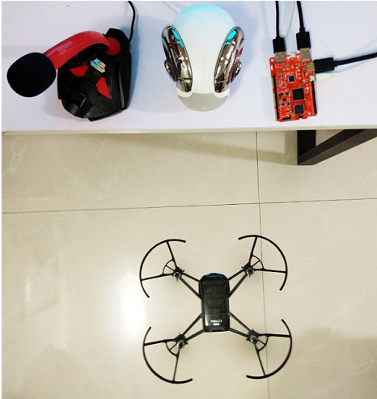

3. 语音控制特洛无人机¶
无人机是创客教育中的热点，但总是用遥控器或者手机控制，早就司空见惯了。一次偶然的机会接触到特洛无人机，刚开始是在虚谷号上使用UDP协议控制无人机起飞等动作，后面玩了一段时间后发现无人机的操控无法脱离双手，不够智能。
后面做项目时接触了百度语音识别，突发奇想；如果无人机能够使用语音控制其飞行，那不是可以脱离双手，实现真正的只能无人机了吗？既然有了想法，那就开始干吧。
3.1. 案例描述¶
特洛无人机是大疆推出的教育无人机，支持编程控制。特洛无人机开启Wi-Fi热点，虚谷号连上后发送各种语音指令，如起飞、降落、前进等。
3.2. 原理分析¶
首先，要实现语音控制无人机动作，首先要在虚谷号上通过麦克风将指令的语音录制成音频文件；其次，调用百度语音识别的接口将录制好的音频文件上传百度进行识别；最后，根据识别的结果控制无人机相应的动作。其流程如下：
1.虚谷号利用麦克风录制音频文件代码实现
Python 很强大其原因就是因为它庞大的三方库 , 资源是非常的丰富 , 当然也不会缺少关于音频的库
关于音频, PyAudio 这个库, 可以实现开启麦克风录音, 可以播放音频文件等等,此刻我们不去了解其他的功能,只了解一下它如何实现录音的
PyAudio实现麦克风录音：
CHUNK = 1024
FORMAT = pyaudio.paInt16
CHANNELS = 1
RATE = 16000
RECORD_SECONDS = 3
- def rec(file_name): #调用PyAudio录制音频
p = pyaudio.PyAudio()
- stream = p.open(format=FORMAT,
channels=CHANNELS, rate=RATE, input=True, frames_per_buffer=CHUNK)
print(“开始录音,请说话……”)
frames = []
- for i in range(0, int(RATE / CHUNK * RECORD_SECONDS)):
data = stream.read(CHUNK) frames.append(data)
print(“录音结束!”)
stream.stop_stream() stream.close() p.terminate()
wf = wave.open(file_name, ‘wb’) wf.setnchannels(CHANNELS) wf.setsampwidth(p.get_sample_size(FORMAT)) wf.setframerate(RATE) wf.writeframes(b’’.join(frames)) wf.close()
2.虚谷号调用百度AI接口进行语音识别代码实现
百度语音识别为开发者提供业界优质且免费的语音服务，通过场景识别优化，准确率达到90%以上，我们只需要将我们需要识别的音频文件上传百度，百度会根据音频文件 将识别的结果返回。
语音识别的参考代码如下： class Speech_Recognize: #百度语音识别类
- def __init__(self,API_KEY,SECRET_KEY): #初始化
self.API_KEY = API_KEY self.SECRET_KEY = SECRET_KEY self.TOKEN_URL = ‘http://openapi.baidu.com/oauth/2.0/token’ self.SCOPE = ‘audio_voice_assistant_get’ self.ASR_URL = ‘http://vop.baidu.com/server_api’ self.DEV_PID = 1537 self.CUID = ‘123456PYTHON’ self.RATE = 16000 self.TOKEN = self.fetch_token()
- def fetch_token(self): #获取百度token
- params = {‘grant_type’: ‘client_credentials’,
‘client_id’: self.API_KEY, ‘client_secret’: self.SECRET_KEY}
post_data = urlencode(params) post_data = post_data.encode( ‘utf-8’) req = Request(self.TOKEN_URL, post_data) try:
f = urlopen(req) result_str = f.read()
- except URLError as err:
print(‘token http response http code : ‘ + str(err.code)) result_str = err.read()
result_str = result_str.decode()
result = json.loads(result_str) if (‘access_token’ in result.keys() and ‘scope’ in result.keys()):
- if not self.SCOPE in result[‘scope’].split(‘ ‘):
raise DemoError(‘scope is not correct’)
return result[‘access_token’]
- else:
raise DemoError(‘MAYBE API_KEY or SECRET_KEY not correct: access_token or scope not found in token response’)
- def get_result(self,audio_file): #上传语音文件，返回识别结果
speech_data = [] with open(audio_file, ‘rb’) as speech_file:
speech_data = speech_file.read()
length = len(speech_data) if length == 0:
raise DemoError(‘file %s length read 0 bytes’ % audio_file)
speech = base64.b64encode(speech_data) speech = str(speech, ‘utf-8’) params = {‘dev_pid’: self.DEV_PID,
‘format’: audio_file[-3:], ‘rate’: self.RATE, ‘token’: self.TOKEN, ‘cuid’: self.CUID, ‘channel’: 1, ‘speech’: speech, ‘len’: length }
post_data = json.dumps(params, sort_keys=False) req = Request(self.ASR_URL, post_data.encode(‘utf-8’)) req.add_header(‘Content-Type’, ‘application/json’) try:
begin = timer() f = urlopen(req) result_str = f.read() print (“识别耗时： %f” % (timer() - begin))
- except URLError as err:
print(‘asr http response http code : ‘ + str(err.code)) result_str = err.read()
result_str = str(result_str, ‘utf-8’) result_str = eval(result_str) if result_str[“err_no”] == 0:
return result_str[“result”][0]
- else:
print(“识别错误码：”+str(result_str[“err_no”])) return -1
3.虚谷号控制特洛无人机代码实现
特洛无人机的控制是通过UDP协议进行传输指令，虚谷号使用python编写UDP客户端，输入相应的指令即可操控飞机动作，其核心代码如下：
- class Tello: #无人机控制类
- def __init__(self,tello_ip):
self.tello_ip = tello_ip self.port = 8889 self.data = ‘’ self.sock = socket.socket(socket.AF_INET, socket.SOCK_DGRAM) self.receive_thread = threading.Thread(target=self._receive_thread) self.receive_thread.daemon = True self.receive_thread.start() self.send_command(‘command’)
- def _receive_thread(self): #开启线程接收无人机回传消息
- while True:
- try:
self.data, server = self.sock.recvfrom(1024) print(data.decode(encoding=”utf-8”))
- except Exception:
print (‘ Exit … ‘) break
- def send_command(self,command): #无人机控制方法
tello_address = (self.tello_ip,self.port) if not command:
print(“please do not send empty command”)
- elif ‘end’ in command:
self.sock.close()
- else:
command = command.encode(encoding=”utf-8”) self.sock.sendto(command, tello_address)
- def get_response(self):
return self.data
整个特洛无人机的操作流程和代码后续我们将在虚谷号的论坛上公开，访问地址：http://vvboard.net.cn/bbs/
4.室外飞行测试
为了更好的飞行体验，请选择风和日丽的日子在宽阔的地带进行飞行测试，飞行距离不能超过wifi传输距离，否则无法实时的操控飞机。
测试视频请访问以下网址观看：https://v.youku.com/v_show/id_XNDE0OTQxOTM4NA==.html?spm=a2hzp.8244740.0.0
5.总结
从这个作品可以看出，借助Python的PyAudio库和百度语音识别，使用UDP协议，就可以实现无人机的智能操控，方便快捷。在制作这个作品的时候，我们并不需要给虚谷号接上显示器和鼠标、键盘，只需要把在电脑中调试成功的Python代码，复制到虚谷号的U盘中就可以正常执行，大大降低了应用门槛。